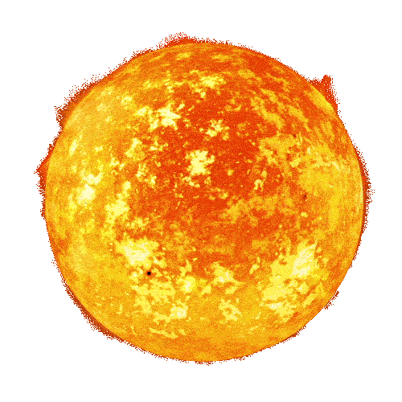

The Sun is the star at the center of our solar system. It is a nearly perfect sphere of hot plasma, made mostly of hydrogen and helium, and it generates energy through nuclear fusion in its core. Every other object in the solar system, from the smallest asteroid to the largest planet, orbits around it due to its immense gravitational pull.
The Sun formed about 4.6 billion years ago from the gravitational collapse of a giant molecular cloud of gas and dust. As the cloud collapsed, most of the material gathered at the center, forming the Sun, while the remaining material flattened into a disk that eventually formed the planets, moons, and other bodies of the solar system.
The Sun has a diameter of about 1.39 million kilometers, making it roughly 109 times wider than Earth. It accounts for about 99.8% of the total mass of the solar system, meaning the combined mass of all the planets makes up less than 1% of the mass in the system.
The Sun is made up of several layers, including the core, radiative zone, convective zone, photosphere, chromosphere, and corona. The core is where nuclear fusion takes place, reaching temperatures of about 15 million degrees Celsius. Energy produced in the core takes thousands of years to travel outward through the radiative and convective zones before reaching the surface.
The Sun experiences periods of activity, including sunspots, solar flares, and coronal mass ejections. Sunspots are cooler, darker regions on the surface caused by magnetic activity, while solar flares and coronal mass ejections release bursts of energy and charged particles into space, which can affect satellites and power grids on Earth.
The Sun provides the light and heat necessary to sustain life on Earth. Its energy drives Earth's climate and weather systems, and it powers photosynthesis in plants, which forms the base of most food chains. Its gravity also holds the entire solar system together, keeping the planets in orbit.
Scientists estimate the Sun is roughly halfway through its life cycle. In about 5 billion years, it is expected to exhaust the hydrogen fuel in its core and expand into a red giant, eventually shedding its outer layers and leaving behind a dense core known as a white dwarf.